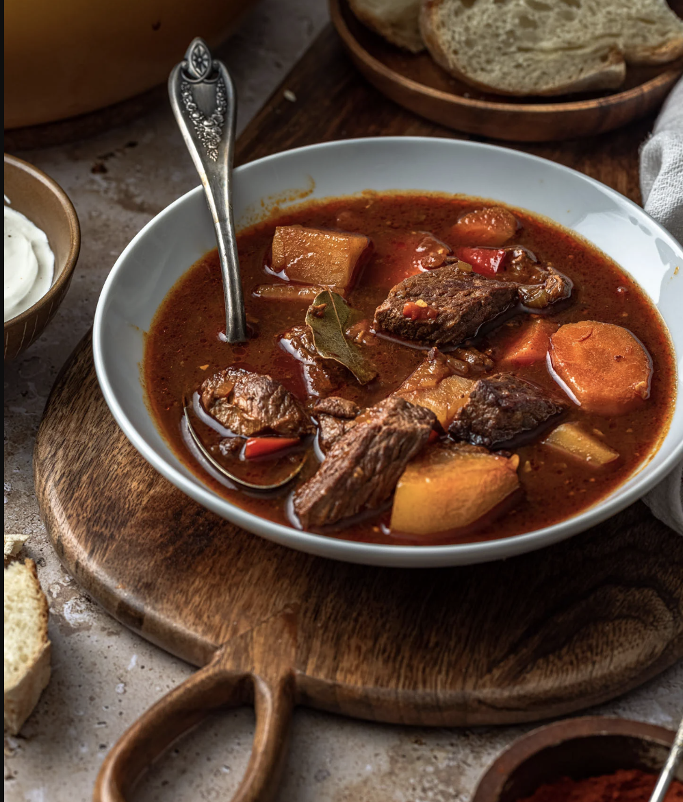

Hungarian Style Goulash
This Hungarian-style goulash is hearty and flavorful, perfect for cold days.
Let it simmer for hours to develop rich flavors. Serve with fresh bread or enjoy it on its own. A warm, comforting dish that feels like a hug.
- 3 potatoes, peeled and diced
- 4 carrots, sliced
- 5 mushrooms, sliced
- 1 cup beef stock
- 1 lb chuck stew beef, cubed
- 1/2 cup flour
- Salt and pepper to taste
- 2 tbsp of Hungarian paprika
- 1 tsp of carayway seeds
- A pinch of hot paprika
- 16 oz can diced tomatoes
- In a big bowl, put the beef.
- In the same bowl, coat the beef with the flour, until each piece is fully coated.
- Heat a large pot or Dutch oven over medium-high heat. Add a drizzle of oil and sear the beef on all sides until browned. Remove and set aside.
- In the same pot, stir the onions until translucent.
- When the onions are translucent, add the spices and mix it, letting it sit for 1 minute.
- Return the seared beef to the pot. Add all the ingredients left over into the pot and stir.
- Add water as needed to just barely halfway to top of the the vegetables and beef. (You should only be able to see a bit of the liquid from the sides of the pot).
- Bring the mixture to a gentle boil, then reduce the heat to low. Cover and let simmer for 2-4 hours, stirring occasionally.
- Adjust seasoning with additional salt and pepper if needed. Serve hot with fresh bread or enjoy on its own.